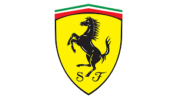

Campeonato Mundial de Fórmula 1 2025 - FIA

| Posição | Piloto | Pontos |
|---|---|---|
| 1 |  Lando Norris Lando Norris |
77 |
| 2 |  Oscar Piastri Oscar Piastri |
74 |
| 3 |  Max Verstappen Max Verstappen |
69 |
| 4 | George Russell |
63 |
| 5 | Charles Leclerc | 32 |
| 6 |  Andrea Kimi Antonelli Andrea Kimi Antonelli |
30 |
| 7 | Lewis Hamilton |
25 |
| 8 | Alexander Albon | 18 |
| 9 | Esteban Ocon | 14 |
| 10 | Lance Stroll | 10 |
| 11 | Pierre Gasly | 6 |
| 12 |  Nico Hülkenberg Nico Hülkenberg |
6 |
| 13 | Oliver Bearman |
6 |
| 14 | Yuki Tsunoda | 5 |
| 15 | Isack Hadjar | 4 |
| 16 |  Carlos Sainz Carlos Sainz |
1 |
| 17 | Fernando Alonso |
0 |
| 18 |  Liam Lawson Liam Lawson |
0 |
| 19 | Jack Doohan |
0 |
| 20 |  Gabriel Bortoleto Gabriel Bortoleto |
0 |
| Posição | Construtores | Pontos |
|---|---|---|
| 1 | McLaren | 151 |
| 2 | Mercedes | 93 |
| 3 |  Red Bull Red Bull |
71 |
| 4 |  Ferrari | 57 |
| 5 | Haas | 20 |
| 6 | Williams | 19 |
| 7 |  Aston Martin Aston Martin |
10 |
| 8 |  Racing Bulls Racing Bulls |
7 |
| 9 |  Alpine Alpine |
6 |
| 10 | Sauber | 6 |
| Posição | Piloto | Pontos |
|---|---|---|
| 1 | Lando Norris |
25 |
| 2 | Max Verstappen |
18 |
| 3 | George Russel |
15 |
| 4 | Andrea Kimi Antonelli |
12 |
| 5 | Alexander Albon | 10 |
| 6 | Lance Stroll | 8 |
| 7 | Nico Hülkenberg |
6 |
| 8 |  Charles Leclerc Charles Leclerc |
4 |
| 9 | Oscar Piastri |
2 |
| 10 | Lewis Hamilton |
1 |
| Posição | Piloto | Pontos |
|---|---|---|
| 1 | Oscar Piastri |
25 |
| 2 | George Russel |
18 |
| 3 | Lando Norris |
15 |
| 4 | Max Verstappen |
12 |
| 5 | Andrea Kimi Antonelli |
10 |
| 6 | Esteban Ocon | 8 |
| 7 | Lewis Hamilton |
6 |
| 8 | Alexander Albon | 4 |
| 9 | Charles Leclerc |
2 |
| 10 | Oliver Bearman |
1 |
| Posição | Piloto | Pontos |
|---|---|---|
| 1 | Max Verstappen |
25 |
| 2 | Lando Norris |
18 |
| 3 | Oscar Piastri |
15 |
| 4 | Charles Leclerc |
12 |
| 5 | George Russel |
10 |
| 6 | Andrea Kimi Antonelli |
8 |
| 7 | Lewis Hamilton |
6 |
| 8 | Isack Hadjar | 4 |
| 9 | Alexander Albon | 2 |
| 10 | Oliver Bearman |
1 |
| Posição | Construtores | Pontos |
|---|---|---|
| 1 | McLaren | 27 |
| 2 | Mercedes | 27 |
| 3 | Red Bull |
18 |
| 4 | Williams | 10 |
| 5 | Aston Martin |
8 |
| 6 | Sauber | 6 |
| 7 | Ferrari | 5 |
| 8 | Haas | 0 |
| 9 | Racing Bulls |
0 |
| 10 | Alpine |
0 |
| Posição | Construtores | Pontos |
|---|---|---|
| 1 | McLaren | 40 |
| 2 | Mercedes | 28 |
| 3 | Red Bull |
12 |
| 4 | Haas | 9 |
| 5 | Ferrari | 8 |
| 6 | Williams | 4 |
| 7 | Racing Bulls |
0 |
| 8 | Aston Martin |
0 |
| 9 | Alpine |
0 |
| 10 | Sauber | 0 |
| Posição | Construtores | Pontos |
|---|---|---|
| 1 | McLaren | 33 |
| 2 | Red Bull |
25 |
| 3 | Mercedes | 18 |
| 4 | Ferrari | 18 |
| 5 | Racing Bulls |
4 |
| 6 | Williams | 2 |
| 7 | Hass | 1 |
| 8 | Aston Martin |
0 |
| 9 | Alpine |
0 |
| 10 | Sauber | 0 |
A pontuação da equipe é a soma dos pontos dos pilotos da equipe em cada etapa.
Exemplo: Se os pilotos da Red Bull Racing conquistarem 25 e 12 pontos respectivamente em uma etapa, a equipe receberá 37 pontos nessa etapa.
Max Verstappen - Red Bull Racing/Honda Fernando Alonso - Aston Martin/Mercedes Andrea Kimi Antonelli - Mercedes George Russell - Mercedes Lewis Hamilton - Ferrari Charles Leclerc - Ferrari Oscar Piastri - McLaren/Mercedes Lando Norris - McLaren/Mercedes Oliver Bearman - Haas/Ferrari Nico Hulkenberg - Kick Sauber/Ferrari Gabriel Bortoleto - Kick Sauber/Ferrari Jack Doohan - Alpine/Renault Liam Lawson - Racing Bulls/Honda Carlos Sainz - Williams/Mercedes